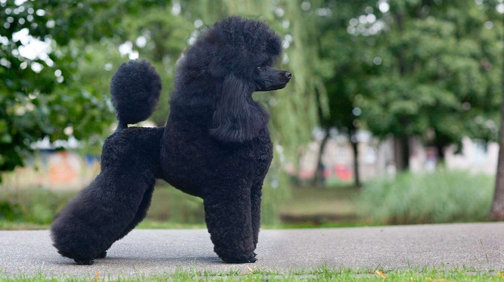

Пудель – воплощение красоты и экстравагантной декоративности, сочетающихся с гармоничным сложением этой собаки, ее великолепным темпераментом, высоким интеллектом. Восхитительная внешность пуделя искрится артистичностью, шармом и экспрессией, а его доброта и жизнелюбие не знают границ. Эти замечательные собаки отличаются невероятной преданностью, которая распространяется на всех членов семьи, при этом пудели очень чувствительны к человеческому вниманию. Они веселые, озорные, любят дурачиться и всегда готовы принять участие в играх и забавах.